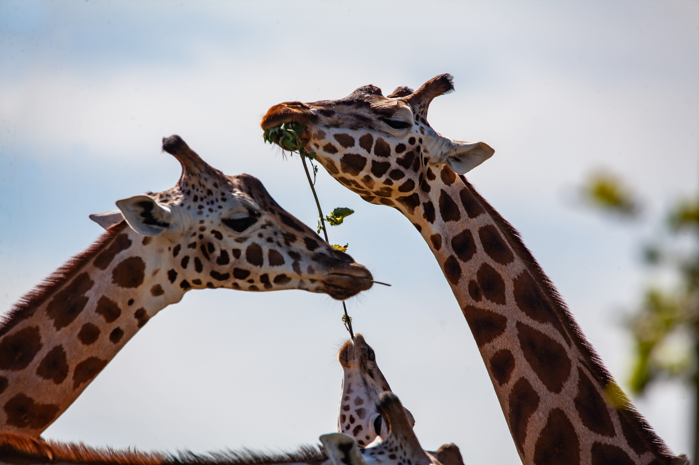
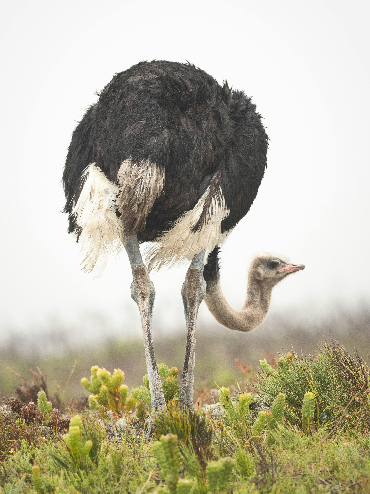
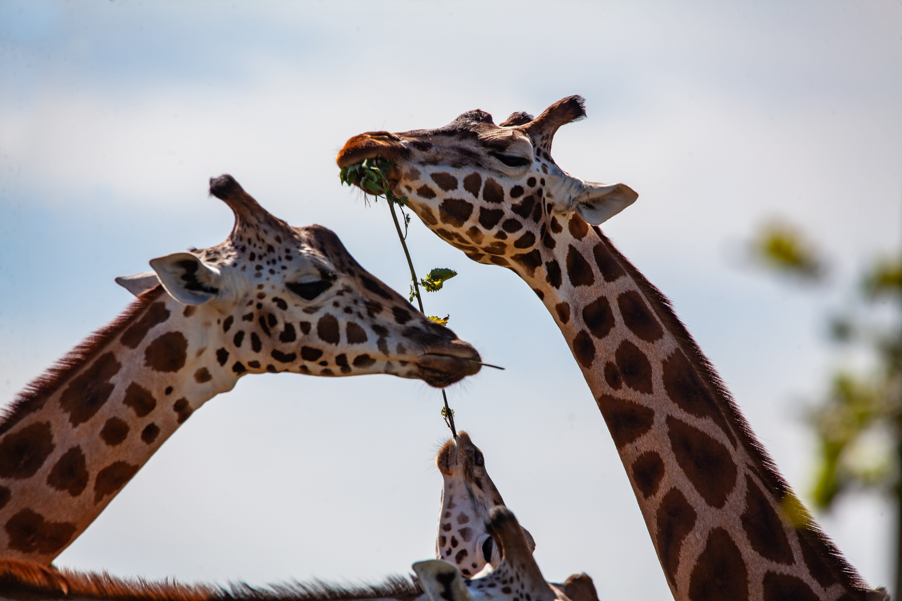
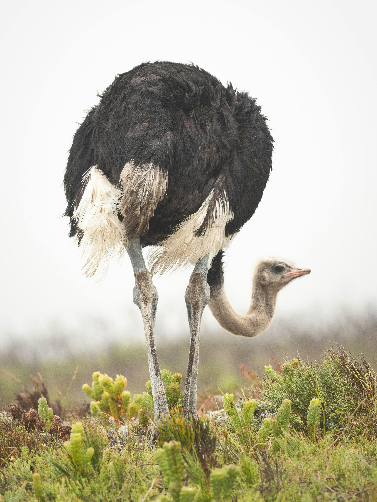
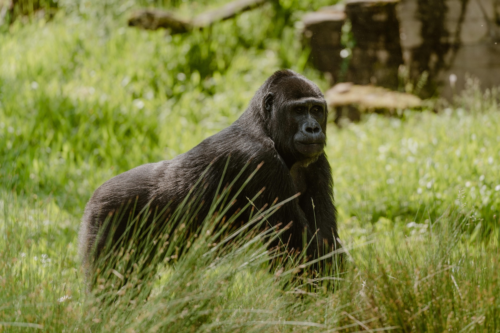
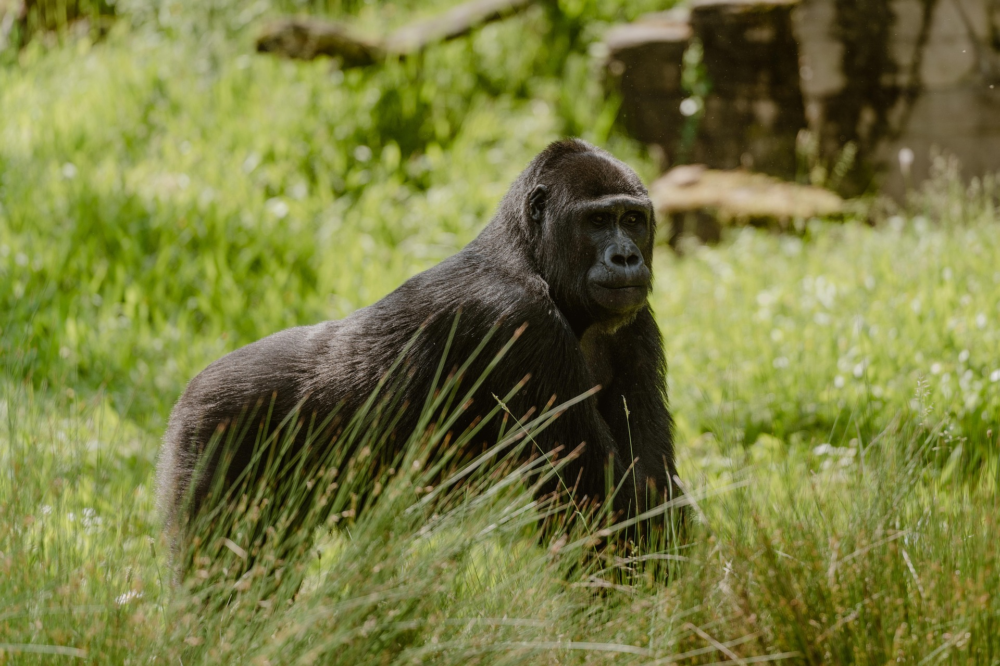

Prime Safaris
Welcome to Prime Safaris — your premier destination for unforgettable wildlife experiences. Since our founding in 2004, we’ve been passionate about conservation and committed to delivering exceptional safari adventures across Africa.
Our History
Prime Safaris was founded by a team of wildlife enthusiasts with a shared vision: to bring people closer to nature. What began as a single safari camp in the heart of Africa has grown into a leading safari company with operations across the continent. Today, we offer diverse safari experiences that cater to all interests and budgets.
Meet Our Founders

Joshua - Passionate conservationist with over 15 years of experience.

Brian - Dedicated to promoting sustainable tourism and conservation.
Our Mission
At Prime Safaris, our mission is to deliver exceptional wildlife experiences while championing conservation and sustainability. We believe in responsible tourism and collaborate with local communities to ensure that our efforts benefit both people and the environment.
Our Team
Our dedicated team consists of experienced professionals who are deeply passionate about wildlife and conservation. From expert guides to hospitality staff, every team member plays a vital role in ensuring our guests enjoy a safe, educational, and unforgettable safari experience.
Awards & Recognition
We are honored to have received several prestigious awards, including:
- 🏆 Best Safari Guiding Team 2024
- 🌍 Best Safari Experience 2023
What Our Guests Say
Don't just take our word for it — here’s what some of our happy clients have shared:
"Prime Safaris exceeded our expectations in every way. The guides were incredibly knowledgeable, and the accommodations were luxurious." — John
"We'll never forget our safari experience with Prime Safaris. The staff were friendly, and the wildlife was absolutely breathtaking." — Betty
Conservation Efforts
We are committed to protecting endangered species and supporting conservation initiatives across Africa. Some of our key conservation efforts include:
- Wildlife Protection: Supporting organizations that work to safeguard endangered species and habitats.
- Community Development: Partnering with local communities to promote sustainable practices and conservation education.

Sustainability Practices
At Prime Safaris, sustainability is at the heart of everything we do. We take pride in minimizing our environmental footprint through:
- Renewable Energy: Using solar power and other renewable energy sources at our camps and lodges.
- Waste Reduction: Reducing single-use plastics, promoting recycling, and following eco-friendly waste disposal methods.
Gallery
Take a look at some of our favorite moments from recent safaris. From awe-inspiring landscapes to incredible wildlife encounters, our gallery showcases the magic of Africa.

 




 


Certifications & Memberships
Prime Safaris is proudly certified by the Uganda Tourism Board and is a member of the Uganda Safari Guides Association. These affiliations reflect our commitment to professionalism, safety, and eco-tourism.
Join Us
Are you ready for the adventure of a lifetime? At Prime Safaris, we are passionate about wildlife, nature, and creating unforgettable memories. Contact us today to start planning your dream safari and experience the wonders of Africa firsthand.